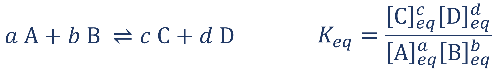

Example Lesson: Chemical Equilibrium
Natalia Spitha
Learning Goals
- Describe the state of chemical equilibrium in terms of competing "forward" and "reverse" chemical reactions.
- Define the term equilibrium constant.
- Relate the mathematical definition of the equilibrium constant to amounts of molecules present at a submicroscopic level.
- Optional: Name examples of reactions where the "equilibrium" is very one-sided (e.g. strong acid-strong base reactions)
Prior knowledge used
- Ability to define the terms atom and ion.
- Understanding of the notation used for chemical equations
- Familiarity with the concept of mole, with molar concentration (in moles per liter), and with orders of magnitude (e.g. 1 μL = 10-6 L)
Helpful additional knowledge
- Familiarity with the definition of acids as proton donors and bases as proton acceptors.
- Ability to define the free energy change of a reaction (ΔG) and relate it to the spontaneity of the reaction.
Part 2: The equilibrium constant
Let's revisit the animation from the previous part, which shows how the concentrations of the reactants and products evolve over time:
H2S + CN- ⇌ HS- + HCN
Start the animation again and let the reaction evolve while you are reading the rest of this text -- reaching equilibrium may take a while!
As you may have realized from the previous lesson, this reaction will not proceed to 100% completion, as there will still be a small amount of reactants (H2S and CN-) left after the equilibrium state is reached. But how much of the reactants and products is present at equilibrium, exactly? If you are finding yourself pondering this question, you should be glad to know there there is actually a way to determine that!
The concept that will be most useful to us for quantifying the concentration of each species at equilibrium is called (unsurprisingly) the equilibrium constant,
Here,
Perhaps the animation above has finished by now! Once the animation is finished, you can hover or tap on the graph to read the concentration values of the reactants and products. Try recording the equilibrium concentrations of the reactants and products from the graph! Then, enter them below to determine the value of
[H2S]eq = μmol / L = [CN-]eq
[HS-]eq = μmol / L = [HCN]eq
?
If you obtained a
You may also be wondering why the
where
Chemical reactions where the products are favored have a negative standard free energy change (
One last note, before we conclude with this lesson: some chemical reactions have such an extreme preference for the reactants or the products, that we don't consider them as equilibrium reactions! For example, the dissociation of the strong acid hydrogen chloride in water occurs pretty much irreversibly:
Take a moment to consider what the values of the "equilibrium" constant and the free energy change would look like for these reactions! In the meantime, let's summarize and generalize what we have learned this far:
The equilibrium constant for a reversible reaction between two reactants A and B is generally given by:
where C and D are the products and a, b, c, and d are the coefficients of all species in the chemical reaction.
- The concentrations of the reactants and products will satisfy the equilibrium conditions defined by K, regardless of the initial concentrations.
- The higher the value of the equilibrium constant, the more product-favored the reaction. The lower the value of the equilibrium constant, the more reactant-favored the reaction.
- The product-favored or reactant-favored nature of a chemical reaction is related to the thermodynamic stability of the reactants and the products. It is directly related to the free energy change of the reaction.
* The value of an equilibrium constant can change if the temperature and atmospheric pressure of the environment change, or if the species involved have very high concentrations.